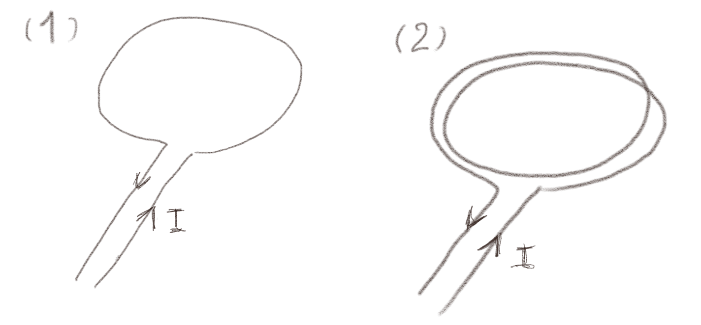
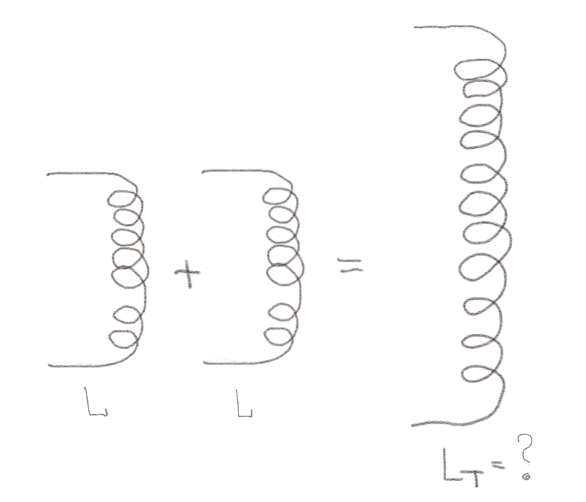
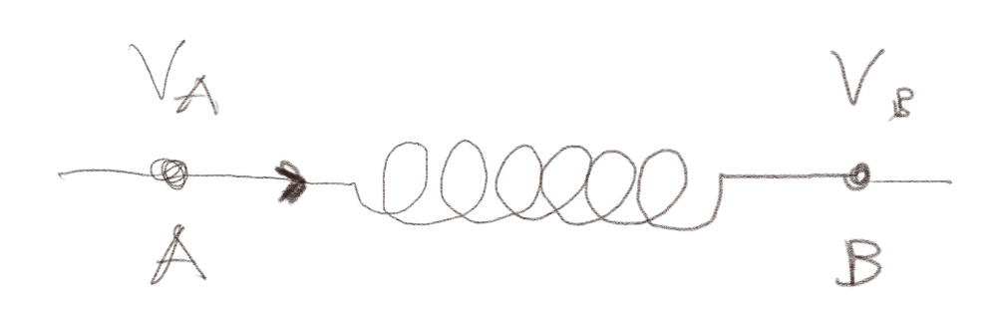
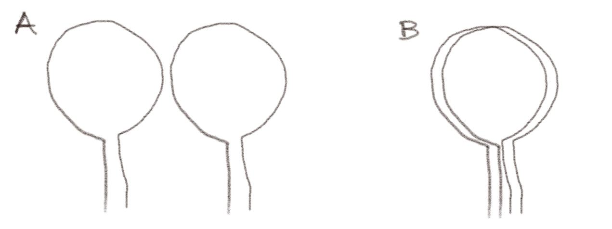
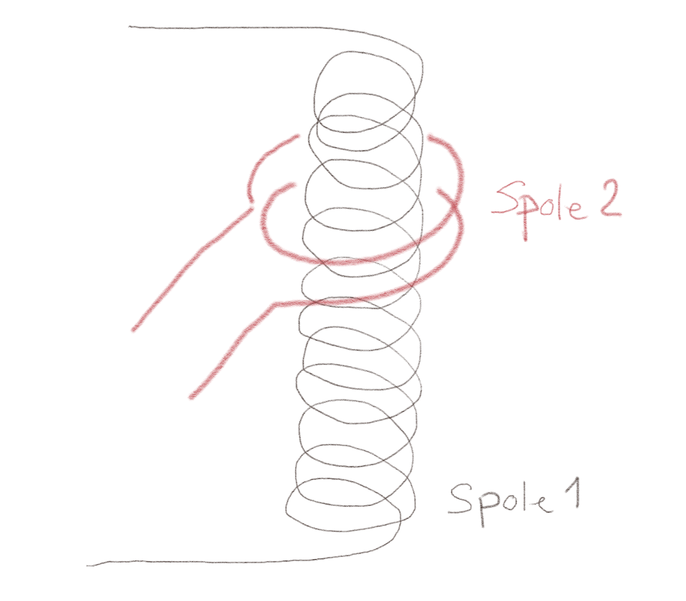

(Lærebok 14.1.1)
Figuren viser to kretser. Krets 2 er identisk med krets 1, men har to løkker på toppen av hverandre i stedet for en løkke.

a) Hva er det magnetiske feltet \( B_2 \) i sentrum av krets 2 sammenliknet med feltet \( B_1 \) i sentrum av krets 1?
Du behøver ikke regne ut feltet. Det er tilstrekkelig å bruke enkle fysiske prinsipper.
Superposisjonsprinsippet.
\( B_2 = 2 B_1 \).
Vi tenker oss at en løkke gir magnetfeltet \( B_1 \) i midten av kretsen. Hvis vi legger to slike løkker på toppen av hverandre finner vi det totale feltet fra superposisjonsprinsippet. Vi legger altså sammen feltene, slik at \( B_2 = B_1 + B_1 = 2 B_1 \). Dette gjelder alle steder, slik at \( \vec{B}_2(x,y) = 2 \vec{B}_1(x,y) \).
b) Hvordan forholder selv-induktansen til de to kretsene seg?
Husk at \( L = \Phi/I \).
Husk at \( \Phi = \int_S \vec{B} \cdot \d \vec{S} \).
Hva er arealet \( S_2 \) for krets 2?
\( L_2 = 4 L_1 \).
Vi vet at \( L_1 = \Phi_1/I \) og \( L_2 = \Phi_2/I \). Vi vet også at \( \Phi_1 \) er gitt som $$ \begin{equation} \Phi_1 = \int_{S_1} \vec{B}_1 \cdot \d \vec{S} \; . \tag{1} \end{equation} $$ og $$ \begin{equation} \Phi_2 = \int_{S_2} \vec{B}_2 \cdot \d \vec{S} \; . \tag{2} \end{equation} $$ Fra superposisjonsprinsippet vet vi at \( \vec{B}_2 = 2 \vec{B}_1 \) slik at: $$ \begin{equation} \Phi_2 = \int_{S_2} 2\vec{B}_1 \cdot \d \vec{S} \; . \tag{3} \end{equation} $$ MEN!! integrasjonsarealet \( S_2 \) er ikke det samme som \( S_1 \). Arealet \( S_2 \) er arealet til de to kretsene som ligger oppå hverandre. Vi kan derfor skrive at $$ \begin{equation} \int_{S_2} 2\vec{B}_1 \cdot \d \vec{S} = \int_{S_1} 2\vec{B}_1 \cdot \d \vec{S} + \int_{S_1} 2\vec{B}_1 \cdot \d \vec{S} = 4 \int_{S_1} \vec{B}_1 \cdot \d \vec{S} \tag{4} \end{equation} $$ Det betyr at \( \Phi_2 = 4 \Phi_1 \). Strømmen \( I \) er den samme i begge tilfeller slik at $$ \begin{equation} L_2 = \frac{\Phi_2}{I} = \frac{4 \Phi_1}{I} = 4 L_1 \; . \tag{5} \end{equation} $$
For en solenoide med lengde \( b \), tverrsnittareal \( S \) og \( N \) viklinger er det magnetiske feltet \( B = \mu_0 (N/b) I \), hvor \( I \) er strømmen som går gjennom solenoiden.
a) Hva er fluksen gjennom en enkelt vinding?
\( \Phi = BS \)
Magnetfeltet er uniformt inne i solenoiden. Fluksen gjennom et tverrsnitt gjennom solenoiden, som svarer til en enkelt vinding, er $$ \begin{equation} \Phi = \int_S \vec{B} \cdot \d \vec{S} = BS \; , \tag{6} \end{equation} $$ hvor \( S \) er tverrsnittarealet til solenoiden.
b) Hva er fluksen gjennom hele solenoiden med \( N \) vindinger?
\( \Phi = NBS \)
Hele solenoiden består av \( N \) vindinger. Vi finner fluksen som $$ \begin{equation} \Phi_N = \int_{S_N} \vec{B} \cdot \d \vec{S} = N \int_S \vec{B} \cdot \d \vec{S} = N BS \; . \tag{7} \end{equation} $$
c) Hva er induktansen til solenoiden?
\( L = \mu_0 N^2 S/b \)
Vi finner induktansen $$ \begin{equation} L = \frac{\Phi_N}{I} = \frac{NBS}{I} = \frac{N \mu_0 (N/b) I S}{I} = \frac{\mu_0 N^2 S}{b} \tag{8} \end{equation} $$ hvor vi har satt inn at \( B = \mu_0 (N/b) I \).
Two lange solenoider, hver med en induktans \( L \), kobles sammen så de danner en enkel, lang solenoide med induktans \( L_T \) som vist i figuren.

a) Hva er \( L_T \)?
Bruk resultatet fra forrige oppgave, \( L = \mu_0 N^2 S/b \) eller at \( B = \mu_0 NI/b \)
\( L_T = 2 L \)
Vi kan bruke resultatet fra forrige oppgave eller vi kan ta utgangspunkt i at feltet inne i en solenoide er \( B = \mu_0 NI/b \).
La oss først bruke uttrykket for feltet. For den doble solenoiden vil antall viklinger være \( 2N \) og lengden være \( 2b \). Da blir feltet \( B_L = \mu_0 (2N) I /(2b) = \mu_0 NI/b \). Feltet blir derfor det samme i den doble solenoiden. Hva blir fluksen gjennom \( 2N \) viklinger? Den blir \( \Phi_{2N} = (2N) \mu_0 NI/b S \). Da blir selv-induktansen \( L_T = \Phi_{2N}/I = \mu_0 2 N^2 I S/ (bI) = \mu_0 2 N^2 I S/ b = 2 L \). Vi kunne sett dette direkte fordi magnetfeltet er det samme, men arealet er dobbelt så stort (fordi antallet viklinger er dobbelt så stort). Dermed blir også induktansen dobbelt så stor.
La oss i stedet bruke uttrykket for induktansen \( L = \mu_0 N^2 S/b \). For den doble solenoiden er lengden \( 2b \) og antallet viklinger \( 2N \) slik at induktansen blir \( L_T = \mu_0 (2N)^2 S/(2b) = 2 \mu_0 N^2S/b = 2 L \).
(Lærebok 14.1.3)
En del av en krets har en selv-induktans \( L \) som illustrert i figuren.

a) Hvis potensialet \( V_A > V_B \), hva kan vi da si om strømmen \( I \) gjennom spolen?
Hva er relasjonen mellom spenningsforskjell og strøm for en induktans \( L \)?
\( I \) strømmer fra A til B og er økende
For en induktans \( L \) vet vi at spenningsforskjellen er relatert til den tidsderiverte av fluksen: $$ \begin{equation} e = - \frac{\d \Phi}{\d t} \; , \tag{9} \end{equation} $$ og at fluksen er relatert til strømmen \( \Phi = L I \), slik at $$ \begin{equation} e = - \frac{\d \Phi}{\d t} = - L \frac{\d I}{\d t}\; , \tag{10} \end{equation} $$ hvor vi har antatt at \( L \) ikke endrer seg med tiden. Merk at emf'en \( e \) er en spennings-økning langs kretsen. Spennings-fallet over \( L \) vil derfor være $$ \begin{equation} V_A - V_B = -e = L \frac{\d I}{\d t} \; . \tag{11} \end{equation} $$ Vi ser at fordi \( V_A > V_B \) vil \( V_A - V_B > 0 \) og \( \d I/\d t \) må derfor være positiv og strømmen må øke. Strømmen går derfor fra høyt til lavt potensial og er økende.
b) Hvis strømmen \( I \) er avtagende, hva kan vi da si om spenningfallet \( V_A - V_B \) over \( L \)?
\( V_A-V_B < 0 \)
Vi kan bruke de samme argumentet som ovenfor. Spenningsfallet \( V_A - V_B \) er gitt som $$ \begin{equation} V_A - V_B = -e = L \frac{\d I}{\d t} \; . \tag{12} \end{equation} $$ Hvis \( I \) er avtagende så er \( \d I/\d t < 0 \) og dermed er spenningsfallet negativt. Det betyr at \( V_B > V_A \).
(Lærebok 14.1.5)
(Lærebok 14.2.1)
Figuren viser to identiske sirkulære kretser.

a) Hvilken relativ plassering av de to kretsene gir størst gjensidig induktans? Begrunn svaret ditt.
Den gjensidige induktansen er avhengig av fluksen til magnetfeltet fra den ene kretsen gjennom den andre kretsen. Alle felt-linjene går gjennom kretsen som setter opp feltet. Hvis den andre kretsen ligger direkte over kretsen som setter opp feltet, vil fluksen være stor. Hvis den andre kretsen ligger et stykke utenfor kretsen som setter opp feltet, slik tilfellet er i figur A, vil kun noen av felt-linjene gå gjennom kretsen. Fluksen vil derfor være mindre for systemet i figur A enn i figur B, og derfor vil også den gjensidige induktansen, som er gitt som \( L_{12} = \Phi_{12}/I \), bli mindre for systemet i figur A enn for systemet i figur B.
Figuren viser to spoler. En spole med to vindinger med stor diameter ligger rundt en lang solenoide med en mindre diameter som vist i figuren.

a) Hva er størst \( L_{12} \) eller \( L_{21} \)?
Den gjensidige induktansen er symmetrisk at \( L_{12} = L_{21} \)
b) Hvis antall viklinger i spole 2 dobles, hva skjer med den gjensidige induktansen \( L_{12} \)?
Den blir dobbelt så stor.
I dette tilfellet vil magnetfeltet som settes opp av solenoiden ikke endres. Det som endres er størrelsen på overflaten \( S \) som man regner fluksen for, denne overflaten vil være proporsjonal med antall viklinger \( N \). Hvis vi dobler antall viklinger, vil vi doble overflaten \( S \) og dermed og dermed også doble fluksen, \( \Phi_{12} \). Den gjensidige induktansen \( L_{12} = \Phi_{12}/I_1 \) blir derfor dobbelt så stor.
Vi husker at for selv-induktansen så er \( L \) avhengig av \( N^2 \), men det er fordi antall viklinger både bidrar til magnetfeltet og til fluksen. Her bidrar antall viklinger \( N \) kun til fluksen (eller til magnetfeltet).
(Lærebok 14.2.3)
(Lærebok 14.3.2)